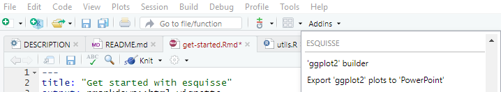
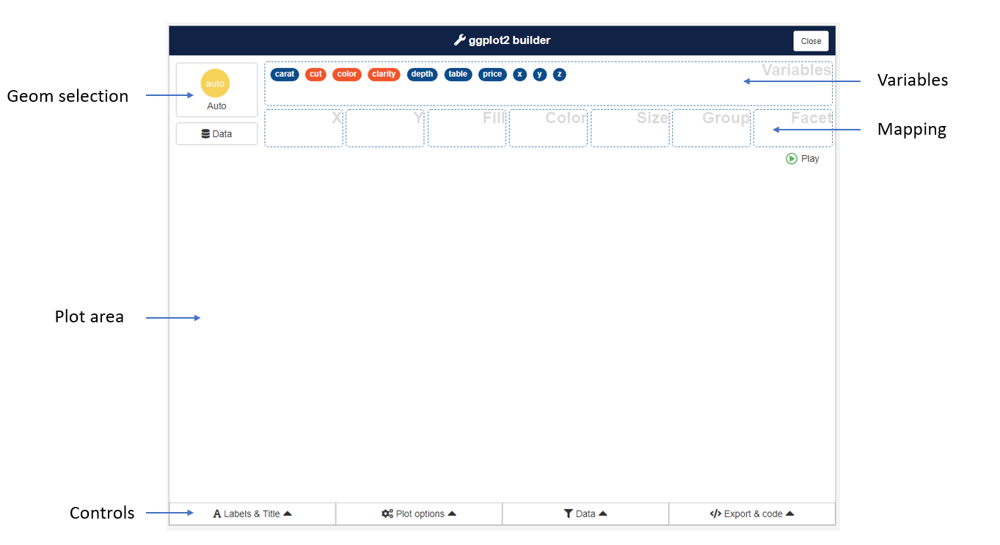
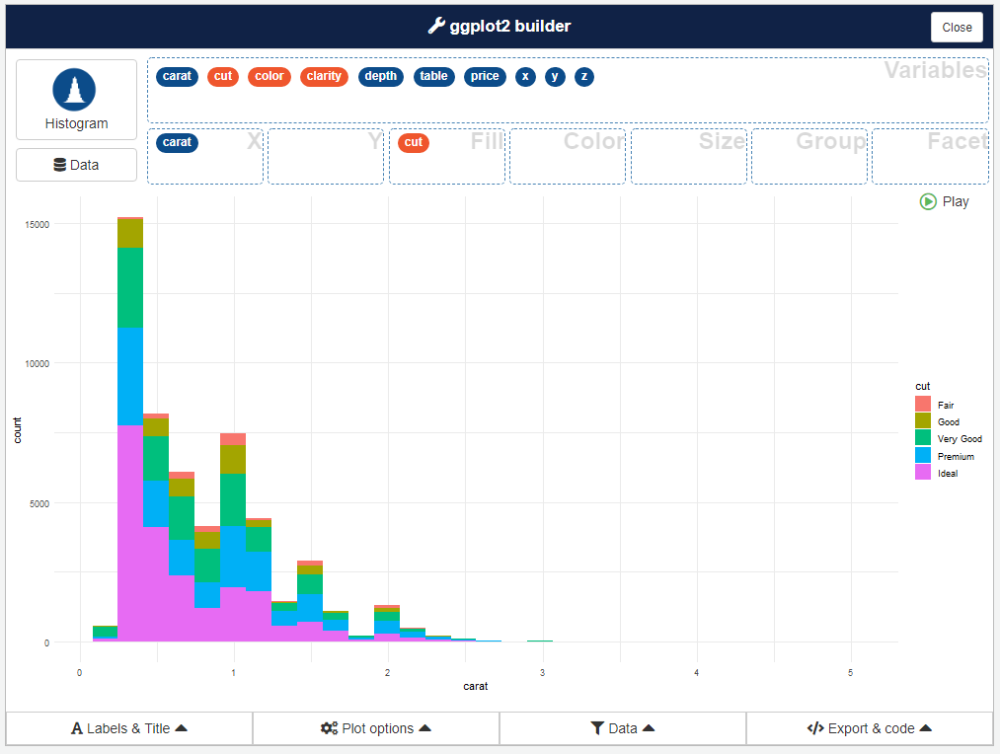
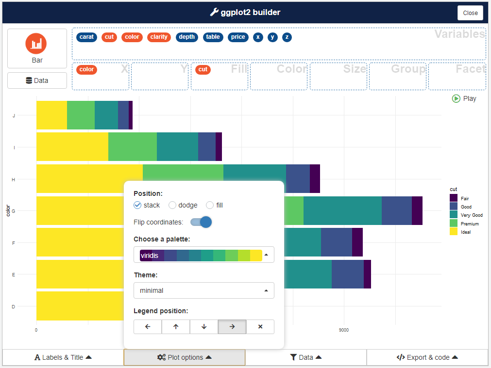

Launch the addin
In RStudio, you can use the Addins menu :

Or in the R console :
To use a data.frame by default, if using the Addins menu highlight with the cursor a data.frame in source editor before launching addin. Otherwise, pass the data.frame as first argument to the function :
Select data
If addin is launched without default data, a window will appear to select a data.frame from Global environment (if no data.frame are present, datasets from {ggplot2} will be used) :


Once you have selected a data.frame, click on the bottom button to start the plotting part.
You can change data selected after that step by clicking Data button.
Create a plot
This is the main interface and the most interesting part of the addin (in example below, we use diamonds dataset from {ggplot2}) :

To create a chart, drag and drop variables into aesthetics boxes :

A geom is automatically picked to represent the data, according to data type you can select an other geom with button in top right corner :

Controls
Four menu under plot area are available to set plot parameters, filter data and retrieve code to generate the plot.

Plot options
Here you can modify plot appearance and parameters, options available in the menu depends on type of plot :
